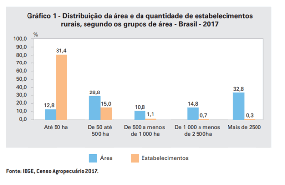
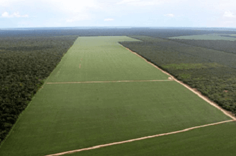
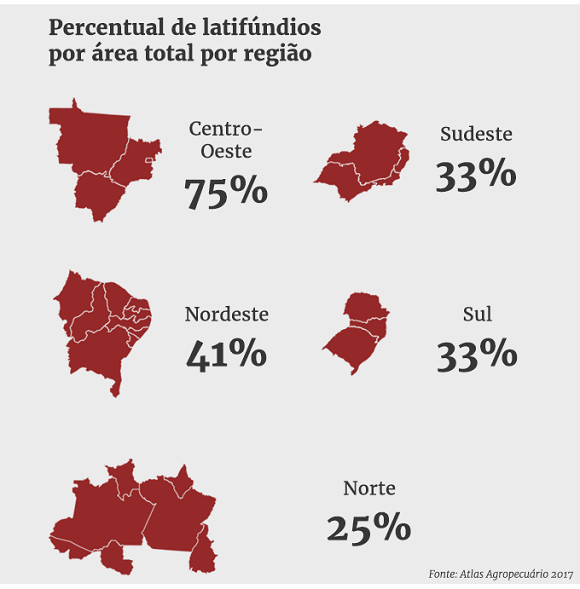
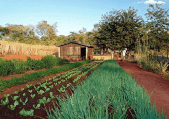
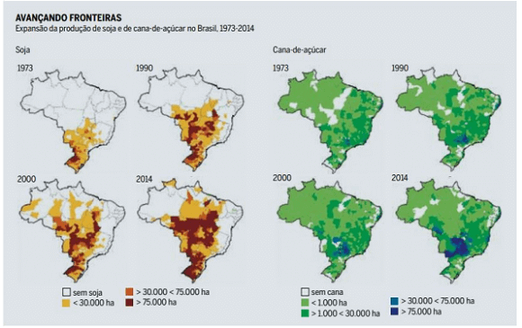
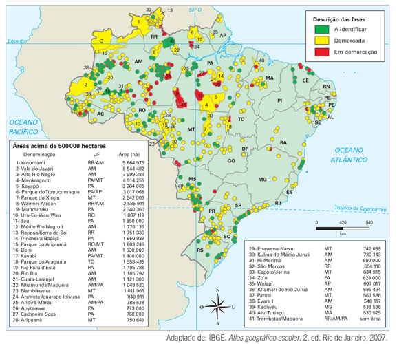
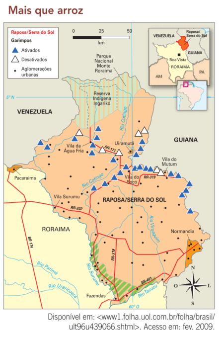
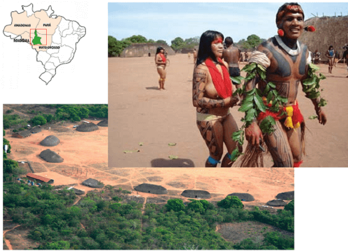

Texto 04 - Geografia agrária I - a questão fundiária no Brasil
Conteúdo: Estrutura fundiária; Reforma agrária; Movimentos sociais no campo; Reservas indígenas; Demarcações de terras; Conflitos no campo.
Objetivo: Identificar e compreender os fatores ligados aos conflitos em torno da posse e do uso da terra no Brasil. Descrever as características da estrutura fundiária brasileira e da dinâmica da reforma agrária no país.
Digite seu nome
Introdução
No último encontro, estudamos a formação do povo brasileiro a partir de distintos grupos étnicos.
Hoje, vamos tomar conhecimento da geografia agrária, isto é, como o capitalismo criou um perfil de distribuição de terras no Brasil e como a população vive nesses territórios.
Veremos a formação e os conflitos existentes na atual estrutura agrária e a questão da reforma agrária no intuito de melhor compreender as desigualdades no campo no tempo presente.
Questões para serem respondidas no caderno sobre o tema da aula de hoje:
Qual é a porcentagem da população brasileira que vive em áreas urbanas e rurais, de acordo com a PNAD 2015?
Por que o espaço geográfico rural e urbano são considerados inseparáveis e complementares?
O que é posse da terra e como ela se diferencia da propriedade da terra?
Como a estrutura fundiária é definida e qual é a situação da estrutura fundiária no Brasil?
O que é um latifúndio e um minifúndio? Qual é a diferença entre eles?
Quais são os principais fatores históricos que contribuíram para a estrutura fundiária concentrada no Brasil?
O que é reforma agrária e quais são suas principais medidas?
Quais são os principais problemas enfrentados pelas terras indígenas no Brasil?
Como o caso da reserva indígena Raposa/Serra do Sol exemplifica os conflitos sobre demarcações de terras indígenas?
O que é o Parque Indígena do Xingu e qual é o seu propósito na preservação das culturas indígenas?
O espaço geográfico: o rural e o urbano
De acordo com dados da Pesquisa Nacional por Amostra de Domicílios (PNAD) 2015 a maior parte da população brasileira, 84,72%, vive em áreas urbanas. Já 15,28% dos brasileiros vivem em áreas rurais, o resulta em, aproximadamente, 32 milhões de pessoas que vivem no campo.
A maioria da população, portanto, além de não viver no campo, não conhece suas particularidades. Entretanto, sem o campo não existiria a cidade.
No senso comum, o campo ou o rural é sinônimo de atraso, não desenvolvido ou não moderno. O que na realidade atual não é um fato, uma vez que, hoje, podemos viver na cidade e trabalhar no campo ou vice-versa; No mundo rural há equipamentos com tecnologias modernas atuando na produção agrícola como GPS, satélites, informação com monitoramento em tempo real.
O espaço geográfico contém o espaço rural e o urbano, eles são inseparáveis e complementares. Isso porque o modo capitalista de produção penetrou profundamente no campo e tudo que está ao seu redor. Com o objetivo de aumentar a produção, as atividades modernas também estão no campo.
Mas porque o Brasil apresenta uma configuração tão peculiar na distribuição de suas terras? Vamos analisar alguns dados e a maneira pela qual o espaço agrário brasileiro foi organizado.
A questão fundiária no Brasil
Um dos pontos mais importantes para compreender as questões ligadas à geografia agrária é a condição predominante de acesso e uso da terra em um determinado contexto social. Nesse sentido, é necessário fazer uma distinção entre posse e propriedade da terra. A posse é o direito de utilizar a terra. A questão principal tanto sobre o que dá o direito a alguém como sobre a definição de que direito é esse - é o uso. Nesse caso, portanto, pode-se dizer que um pedaço de terra é posse de alguém se tal pessoa estiver efetivamente utilizando-o.
A propriedade da terra, por outro lado, é o direito legal sobre um pedaço de terra, sendo este utilizado ou não pelo proprietário. Enquanto a posse é uma relação muito antiga, a propriedade é relativamente recente, datando do século XVI no caso da Europa e do século XIX no caso do Brasil.
Estrutura fundiária concentrada no Brasil
Entende-se como estrutura fundiária a divisão de um território em propriedades privadas. Ela pode ser mais ou menos concentrada, dependendo da forma como as propriedades estão distribuídas entre os proprietários. Se há muita terra sob propriedade de uma porção relativamente pequena de proprietários, dizemos que a estrutura fundiária é concentrada.
O Brasil apresenta uma das estruturas fundiárias mais concentradas do mundo, o que significa que aqui o acesso à terra é bem limitado para a maioria da população. Essa concentração não prejudica apenas aqueles que têm o seu acesso à terra limitado, apresentando, também, consequências econômicas e sociais, entre elas a subutilização da terra para a produção de alimentos e oêxodo rural exagerado, além de favorecer a manutenção de altos índices de violência no campo brasileiro.
×
Êxodo rural: processo de migração de pessoas da zona rural para a urbana, ou seja, a saída de moradores do campo com destino às grandes cidades.
Outra forma de analisar a estrutura fundiária no país é relacionar a área ocupada pelos estabelecimentos agropecuários com a quantidade de estabelecimentos, revelando a concentração em estratos fundiários mais elevados.

Dessa forma, o gráfico acima mostra que, em 2017, os estabelecimentos com menos de 50 hectares representavam 81,4% da quantidade total, mas ocupavam apenas 12,8% da área. Enquanto que os estabelecimentos com mais de 2 500 hectares representavam 0,3% do total de estabelecimentos e ocupavam 32,8% da área de estabelecimentos do País.
A estrutura fundiária é sempre resultado do processo histórico de ocupação do território, incluindo a ação dos proprietários, as políticas públicas e a legislação que regulamentou tal ocupação. A concentração fundiária no Brasil está diretamente ligada aos seguintes fatos históricos:
As sesmarias: foram criadas em Portugal, no século XIV, tendo como objetivo garantir a regulamentação do uso da terra no país. No caso do Brasil, as sesmarias foram utilizadas para organizar a ocupação do território durante a implementação do sistema de plantation, baseado na produção monocultora realizada em grandes extensões de terra, com uso de mão de obra escrava e voltada à exportação. Assim sendo, elas contribuíram diretamente para a criação dos mais antigos latifúndios do país.

Fonte: agroolher.com.br
O Estado de Mato Grosso, por exemplo, é o campeão nacional dos latifúndios, pois concentra em seu território 75% de latifúndios.
×
Latifúndio: propriedade rural ou excessivamente grande (maior do que 600 módulos rurais) ou mantida inexplorada com fins especulativos. Um módulo rural é aquele que “direta e pessoalmente, é explorado pelo agricultor e sua família, garantindo-lhes a subsistência e o progresso social e econômico, com área máxima fixada para cada região e tipo de exploração”. O valor do módulo varia entre as regiões, partindo de 5 até 110 hectares na Amazônia, por exemplo.

Fonte: (Latifúndios 2022).
A maioria dos pequenos proprietários possuem minifúndios.
×
Minifúndio: toda propriedade com dimensão inferior ao do módulo rural de sua região; em outras palavras, um imóvel rural de tamanho que, mesmo sendo explorado, é insuficiente para garantir ao agricultor e sua família uma vida decente.

Fonte: Wikipedia.
Lei de terras de 1850: foi a lei que criou a propriedade privada da terra no Brasil. Ela foi criada no contexto da transição do trabalho escravo para o trabalho livre, quando a elite agrária teve que limitar o acesso à terra àqueles que tivessem dinheiro para comprá-la, enquanto à maioria restava trabalhar nas grandes propriedades.
A expansão da fronteira agrícola: entre as décadas de 1960 e 1980, o Governo Federal e os governos estaduais dos estados do Centro-Oeste promoveram a venda de grandes propriedades para estimular a ocupação do cerrado com a expansão da pecuária e do cultivo da soja. Mesmo que legalmente houvesse limites para a grande propriedade, várias formas de grilagem (falsificação de títulos de propriedade) foram utilizadas para a formação de grandes latifúndios.

Com essa expansão da soja e da pecuária, principalmente em terras devolutas, ocorreu intensa derrubada das matas em direção à Amazônia. E outra prática também surgiu. Parte dessa ocupação é formal, ou seja, uma grande empresa, que pode ser multinacional, consegue o título de propriedade da área, mas a deixa ociosa, à espera de valorização. Em consequência disso, a fronteira agrícola só piorou o problema da estrutura agrária concentrada, já que o tamanho médio dessas propriedades, dessas novas terras são enormes, ou seja, a volta do latifúndio no país.
×
Terras devolutas: são terras públicas sem destinação pelo Poder Público e que em nenhum momento integraram o patrimônio de um particular, ainda que estejam irregularmente sob sua posse. O termo "devoluta" relaciona-se ao conceito de terra devolvida.
Surge um problema quando há muitos latifúndios, grandes propriedades de terra. O primeiro deles está relacionado a produção de alimentos. As grandes propriedades estão massivamente voltadas para a exportação de gêneros agrícolas como soja, milho, carne bovina etc. Várias pesquisas apontam que mais de 70% dos alimentos que estão à mesa do brasileiro são de origem familiar, isto é, de pequenas propriedades familiares. Sendo assim, a concentração da estrutura fundiária explica a queda na produção de gêneros alimentícios básicos e o crescimento das exportações. (Retomaremos esse tema na aula sobre produção agropecuária brasileira).
A modernização agrícola: também tem colaborado para a concentração fundiária, principalmente desde a década de 1970. Nesse caso, o problema é que as fazendas que se modernizam começam a priorizar o aumento da produtividade e o aumento da produção, o que leva seus proprietários a comprarem propriedades de vizinhos. Esse processo é um dos fatores que explica a intensa urbanização ocorrida no país nas décadas de 1970 e 1980.
Os limites à propriedade privada da terra no Brasil: reforma agrária
A reforma agrária em sua essência ou em uma definição genérica é a reorganização mais justa da terra. Em um país onde a estrutura fundiária teve uma formação concentrada, com grandes propriedades voltadas para a produção agroexportador, todas as possíveis mudanças são encaradas de forma negativa por alguma parcela da sociedade. Ainda hoje os grandes proprietários exercem influência sobre autoridades em níveis desde local, regional até nacional.
A concentração fundiária levou ao surgimento de conflitos pela terra no país. Um dos mais importantes foi o das Ligas Camponesas, que, entre as décadas de 1940 e 1960, marcou a crise do modelo econômico agroexportador. Após acabar com o movimento, os governos militares buscaram amenizar a tensão em torno da questão fundiária por meio do Estatuto da Terra, que lançou a ideia de que a propriedade privada sobre a terra teria de ser regulamentada. A principal novidade foi o reconhecimento da necessidade de que a propriedade da terra atendesse à sua função social.
A partir desse momento, passou-se a entender que a propriedade privada da terra é condicionada ao seu aproveitamento. E foi assim que surgiu a noção de reforma agrária. Criada já nos anos 1960, a reforma agrária consiste em um conjunto de políticas públicas que garantam melhor distribuição e, principalmente, melhor uso da terra. As duas principais medidas governamentais ligadas à reforma agrária são a desapropriação de terras improdutivas (para serem distribuídas a famílias cadastradas nos programas de redistribuição de terras) e o apoio financeiro e técnico aos assentadoso).
No entanto, mesmo com o Estatuto da Terra, durante os governos militares, houve aumento dos conflitos, pois com os projetos de expansão da fronteira agrícola sobre o Centro-Oeste e a Amazônia, a concentração fundiária intensificou-se.
Com o fim do regime militar, a luta pela reforma agrária pôde voltar a ocorrer de forma aberta e direta, principalmente porque a Constituição de 1988 criou a obrigatoriedade da reforma agrária em seu artigo 184. Foi nesse contexto que surgiram e cresceram o MST (Movimento dos Trabalhadores Rurais Sem Terra) e, posteriormente, outros grupos que se mobilizam para exigir dos governantes a realização da reforma agrária prevista em lei.
Tais movimentos lutam também por melhores condições de trabalho, uma vez que, no campo brasileiro, são comuns as contratações irregulares de trabalhadores — no esquema de boias-frias (trabalho temporário sem registro) o trabalho infantil e mesmo o trabalho escravo.
Teste seu conhecimento
Sobre a agricultura brasileira, marque a correta:
Os conflitos pela terra continuam...
Em 2022, O jornalista britânico Dom Philips e indigenista Bruno Araújo foram mortos na região da terra indígena Vale do Javari, na Amazônia. Eles iriam se reunir com líder comunitário para conversar e denunciar os invasores na região indígena.
Esse exemplo ilustra o grande problema ainda desse grupo étnico: a terra. Ocupando o território desde os tempos ancestrais, antes mesmo de se tornar Brasil, com a chegada dos colonizadores, os indígenas perderam suas terras e viram suas tradições sendo despedaçadas.
Segundo a FUNAI (Fundação Nacional do Índio), em 2010, havia 668 terras indígenas no Brasil. Veja o mapa abaixo:
Terras indígenas

Essas reservas correspondem a, aproximadamente, 1,1 milhão de km² ou 13% do território nacional. Entretanto, pouco mais da metade dessas reservas foi demarcada e regularizada adequadamente.
Um dos maiores problemas nessas terras é que cerca de 70% delas sofrem com invasões de grupos madeireiros, fazendeiros, posseiros, garimpeiros, grileiros, dentre outros.
As terras indígenas são classificadas pela FUNAI dependendo do estágio de seu reconhecimento. Umas estão demarcadas, mas não regularizadas, outras estão identificadas mas não demarcadas e assim por diante.
Os tipos mais comuns de invasores que os indígenas enfrentam são:
Madeireiras – firmas que extraem a madeira das florestas e desrespeitam suas terras;
Fazendeiros e grandes empresas – A terra dos indígenas é vista como recurso a ser apropriado. Eles contratam jagunços ou pistoleiros para invadir e ocupar essas terras ou ocupam através de posseiros ou pequenos proprietários.
Camponeses ou posseiros expulsos de suas terras – Aqueles que invadem as terras indígenas em busca de novos solos para plantar a partir de base familiar.
Garimpeiros – Em geral, camponeses desempregados ou expulsos de suas terras atraídos pela oferta de lucro fácil no garimpo de ouro, pedras preciosas ou diversos minérios valiosos encontrados em terras indígenas. A área de ocorrência de garimpo é marcada por grande destruição ambiental através da retirada de detritos com uso de mercúrio, extremamente nocivo para a população local, peixes e contaminação da água potável dos rios.
Por isso ocorre conflitos por todo o país com muitas mortos quase que frequentemente.
Teste seu conhecimento
Sobre a questão agrária no Brasil, marque a resposta errada:
O caso da reserva indígena Raposa/Serra do Sol
Um dos exemplos mais representativos do conflito e tensões sobre demarcações de terras indígenas diz respeito a reserva Raposa/Serra do Sol. Localizada em Roraima, ela possui uma área de 1,73 milhões de hectares ou 17.300 km² e faz fronteira ao Norte com a Venezuela e a Guiana. Observe no mapa abaixo:

A reserva foi criada em 1998 pelo reconhecimento dos indígenas que habitam esse região há milhares de anos, como os: Macuxi, Wapichana, Ungakikó, Taurepang e Paramona. Em 2010, a população era de, aproximadamente, de 18 mil habitantes.
O principal motivo do conflito é que existem três cidades nesse região: Pacaraima, Uiramutã e Normandia. Além dos povoados, há produtores de arroz (o principal produto da região) e atividades de mineração, conforme mapa acima.
O problema era: como demarcar a reserva? De forma contínua, isto é, toda região deveria ser exclusiva dos indígenas; ou descontínua, quer dizer, de forma fragmentada e excluindo as cidades, os povoados, as rodovias e as plantações de arroz?
O caso foi parar no STF (Supremo Tribunal Federal) com argumentos de ambas as partes. Os indígenas e com apoio da FUNAI defendiam uma área contínua, sem divisões; Entretanto, a maioria dos políticos da região, dos rizicultores (produtores de arroz) e os prefeitos das pequenas cidades queriam que fossem incluídas suas cidades e suas atividades econômicas. Para esses últimos, se a reserva for demarcada como querem os indígenas, Roraima perderá quase metade de seu território. Portanto, a população não indígena terá de ser removida. Ao contrário, os indígenas dizem que uma reserva em forma de ilhas descaracterizaria as terras deles. Eles também afiram que a população não indígena ocupou a região depois da demarcação (o que configura ilegalidade).
O resultado de diversos conflitos e tensões foi finalizada em 2007 com a decisão do STF de que a reserva deveria ser demarcada de forma contínua, obrigando os produtores de arroz a abandonar a área.
Em 2021, a reserva Raposa Serra do Sol possuía 28 mil habitantes exercendo atividades como a produção de arroz orgânico, feijão, milho, batata e frutas, além da criação de gado nas áreas de “lavrado”, como é conhecida a savana da região.
Atividade: Entrevistas Simuladas sobre Geografia Agrária no Brasil
Objetivo:
Explorar diferentes perspectivas e opiniões sobre a questão da geografia agrária no Brasil.
Compreender os desafios e conflitos enfrentados pelos diversos atores envolvidos no tema.
Materiais Necessários:
Papel e caneta para anotações
Instruções:
Divisão em Grupos:
Forme grupos de cinco ou seis alunos.
Cada grupo terá uma lista de personagens abaixo relacionados à questão da geografia agrária no Brasil.
Personagens:
Agricultor familiar
Líder comunitário de uma área de conflito por terra
Representante de uma grande empresa agropecuária
Ativista ambiental
Político local
Representante de uma comunidade indígena
Outros...
Elaboração do Diálogo:
Dentro de cada grupo, distribuam os personagens entre si.
Com base nos personagens designados, imaginem um cenário de entrevista em que todos os personagens estão presentes.
Cada aluno deve contribuir com ideias e falas para o diálogo, levando em consideração a perspectiva e os interesses do personagem que estão representando.
O diálogo deve abordar questões como a distribuição de terras, impactos da agricultura moderna, conflitos por terra, importância da reforma agrária, entre outros tópicos relevantes.
Não existe pergunta boba! A Ciência é feita de perguntas!
P:
Como evitar a extinção de uma etnia, como a indígena, por exemplo?
R: Umas das formas encontradas pela preservação da etnia indígena foi a criação do Parque Indígena do Xingu, localizado ao Norte do Estado de Mato Grosso com mais de 2 milhões de km² e cortada pelo rio Xingu.
O Parque Indígena do Xingu foi criado em 1961, durante o governo de Jânio Quadros, e parte da ideia de que o indígena só sobrevive na sua própria cultura.
Vivem atualmente no Xingu, aproximadamente 5.500 índios de quatorze etnias distintas.

Fonte: www.amazoniareal.com.br/ Wikipédia.
O Xingu enfrenta hoje uma série de conflitos, como a devastação de suas florestas e substituição por grandes monoculturas de base agroquímica, trazendo graves consequências para os modos de vida dos povos indígenas da região. As secas, os agrotóxicos, as pragas e o fogo descontrolado impactam diretamente na disponibilidade de recursos naturais importantes para os índios.
P:Por que a demarcação de terras gera tantos conflitos?
R: A cultura indígena se diferencia do modo de vida capitalista. Por exemplo, não há propriedade privada, os indígenas vivem em habitações coletivas conhecidas como Ocas. Não há objetivo de lucro, uma vez que não existe o sentido de acumulação. Não há divisão em classes sociais, visto que a especialização e divisão do trabalho no sentido dado pela cultura indígenas soa como um defeito da alma, pois todos devem contribuir para a manutenção da tribo.
Os indígenas precisam de muita terra para caçar, pescar ou coletar frutos, além de pequenas lavouras espalhadas pela mata. Eles não desmatam ou esgotam os seus recursos, mas garantem a sobrevivência do ecossistema. Eles vivem outra relação com o meio natural, diferente da sociedade ocidental. A preocupação com a democracia, com o respeito a culturais tradicionais, a ecologia e a preservação das áreas florestais passa, portanto, por um entendimento da situação desses povos que aqui já habitavam há milhares de anos.
P:
Por que a reforma agrária é importante?
R:
O Brasil possui os maiores latifúndios do Planeta, com fazendas maiores do que diversos países da Europa, por exemplo. Há grileiros (pessoas que falsificam documentos para registrar posse de terras). Menos de 1% dos proprietários agrícolas possui 45% da área rural do país. A reforma agrária está na Constituição Federal e é bem clara: a propriedade da terra está subordinada à sua função social. Isso significa que o “dono” da terra não pode deixá-la improdutiva, sem produzir nada. A terra é um bem especial no capitalismo, possui essa característica, pois precisa atender sua função de abastecer a população. É um direito daqueles que não possui terras e, por outro lado, há milhares ou milhões de hectares sem uso. A reforma agrária é importante para a produção de alimentos, diminuir a fome, propiciar educação e vida digna para milhões de famílias do Brasil.
Desafio - Jornada do herói: O Chamado à Aventura
Na aula passada entramos em contato com o primeiro estágio da jornada do herói, o Mundo Comum. Queremos pensar e escrever o enredo de um jogo sobre o Brasil e suas dinâmicas. O mundo comum é a descrição do cenário. Agora vamos conhecer o segundo estágio: O chamado à Aventura.
Instruções
Forme um grupo com 5-6 estudantes;
Leia o texto abaixo e discuta com seu grupo o conteúdo das questões;
Faça anotações em seu caderno;
Seja criativo, use os conhecimentos que você já possui sobre o Desafio.
Tempo da atividade: 25 minutos.
O Chamado à Aventura (2)
O Mundo Comum na maioria dos jogos ou filmes aparece como algo estático, sem graça. Entretanto, as sementes da mudanças já estão crescendo e só falta uma nova energia para que germinem.
A cena de abertura de Tomb Raider revela menos de trinta segundos do mundo normal da Heroína Lara Croft antes de introduzir o incidente: o navio de Lara encalha e ela mal sobrevive ao violento acidente, acabando sozinha e com medo em uma ilha tropical desconhecida.
Em Star Wars, R2-D2 é carrega o pedido urgente de ajuda da Princesa Leia ao nosso Herói, Luke.
Em A Pedra Filosofal, Harry Porter recebe cartas no dia de seu aniversário entregues por corujas, anunciando que está na hora de ir para Hogwarts.
Imaginem a cena: Uma reserva indígena está sendo invadida por criminosos. Poderíamos descrever como algo assim:
“Lança-se a sombra do problema sobre Nossa Tribo. Sentimos o chamado - nos estômagos que roncam, nas nossas crianças famintas que choram. Por toda a extensão em volta, a terra está seca e estéril e, evidentemente, é preciso que alguém saia e vá além do território familiar. Essa terra desconhecida é estranha e nos enche de medo, mas a pressão sobe, e é preciso fazer alguma coisa, enfrentar riscos, para que a vida possa continuar.
Um vulto emerge, visto através da fumaça da fogueira. Ê um dos anciãos de Nossa Tribo e ele aponta para você. Isso mesmo: você foi escolhido como Buscador, Aquele que Sai em Busca, e foi chamado para começar uma nova procura. Terá que arriscar a própria vida para que a vida maior da Nossa Tribo possa continuar.”
O traço comum dessas trechos de histórias é que existe um evento que liga o motor da história, após ter apresentado o personagem principal, é hora de enfrentar seu objetivo.
O Chamado à Aventura pode vir através de um mensagem, um incidente, uma declaração de guerra, etc. Também pode surgir de dentro do herói, um desconforto com a realidade em sua volta até o lançar em uma aventura.
Sincronicidade
Pode ocorrer uma série de eventos ou mesmo algo por acaso que faz com que o herói vislumbre seu chamado para a aventura.
Levantando a questão dramática
É no mundo comum do herói que vai surgir a questão dramática principal do jogo ou do filme. Toda boa
história levanta uma série de perguntas sobre o herói. Será que ela vai atingir seu objetivo? Superar
seu defeito? Aprender sua lição? Ou voltar para casa? Conseguir o outo ou ganhar o jogo?
Tentação
O herói pode ficar encantado com uma viagem à um local exótico, ou ouvir falar de um boato de um tesouro perdido, como em Uncharted 4: A Thief's End.
Arautos da mudança
Os arautos eram os emissários de um príncipe na Idade média responsáveis por enviar mensagens e fazer ouvir as ordens dele. O personagem Arauto pode ser positivo, negativo ou neutro, mas sempre serve para desencadear o movimento da história, apresentando o herói um convite ou desafio para enfrentar o desconhecido.
Muitos vezes o herói não percebe que seu Mundo Comum possui algo de errado, ai que entra o personagem do arauto.
Reconhecimento
Recorrente nos contos populares é a figura do vilão que percorre o território do herói, as vezes fazendo perguntas pela vizinhança ou pedindo informações sobre o local. Isso pode levar a um Chamado à Aventura. Por exemplo, uma empresa pretende se instalar em uma pequena cidade, mas na verdade quer esconder lixo radioativo no solo.
Desorientação e desconforto
Muitas vezes, o Chamado à Aventura pode ser perturbador e desorientador para o herói. Pode ocorrer uma evento, uma briga, uma injustiça que deixa o herói “sem chão” e o faz pensar e o faz crescer, amadurecer na história.
Carência ou necessidade
Um Chamado à Aventura pode chegar sob a forma de uma perda ou subtração da vida do herói no Mundo Comum. No jogo Final Fight, a filha do prefeito da cidade de Metro
City foi sequestrada pela gangue Mad Gear. O ex-lutador de box decide ir atrás dela e combater a gangue com suas próprias mãos. Na franquia de Super Mario Bros, o jogo utiliza, da mesma forma, o resgate da Princesa Peach do inimigo Bowser como recurso para desenvolver o enredo da história.
Sem opções
As vezes o herói não tem opções a não ser se lançar na aventura. Pode ter sido testemunha de um crime e precisa fugir para outro local e enfrentar os desafios.
Advertências para os heróis trágicos
Nem todos os Chamados à Aventura são convites positivos. Podem ser avisos de perigos ou advertências de desgraça, algo como: ser for por esse caminho irá se dar mal.
Portanto, o Chamado à Aventura é um processo de seleção. Surge em uma sociedade uma situação instável, e alguém se oferece como voluntário ou é escolhido para assumir a responsabilidade. Os heróis relutantes têm que ser chamados muitas vezes, pois tentam evitar essa responsabilidade. Os heróis mais dispostos logo respondem a chamados internos e nem precisam de pressões externas. Eles mesmos se selecionaram para a aventura. Mas este tipo é raro, e a maior parte dos heróis tem que ser aliciada, empurrada ou tentada para a aventura. Muitos deles tentam dar o fora ou seja, recusam o chamado.
Dom Phillips e Bruno Araújo: Relembre cronologia do caso. Disponível em: https://cultura.uol.com.br
/noticias/49947_dom-phillips-e-bruno-araujo-relembre-cronologia-do-caso.html. Acesso em 26 ago. 2022.
Garimpo na Amazônia: o que está por trás da invasão do rio Madeira. Disponível em: https://www.bbc.com
/portuguese/brasil-59425015. Acesso em: 25 ago. 2022.
Indígenas mostram “gestão modelo” na reserva Raposa Serra do Sol. Disponível em: https://www.camara.leg.br
/noticias/796317-indigenas-mostram-gestao-modelo-na-reserva-raposa-serra-do-sol/. Acesso em 27 ago. 2022.
Latifúndios são 83% dos terrenos privados do Mato Grosso do Sul. Disponível em: https://www.brasildefato.com.br
/2017/04/03/83-dos-terrenos-privados-do-mato-grosso-do-sul-sao-latifundios. Acesso em 24 ago. 2022.
Quase metade da área rural brasileira pertence a 1% das propriedades do país. Disponível em: https://agenciabrasil.ebc.com.br
/geral/noticia/2016-11/menos-de-1-das-propriedades-agricolas-detem-quase-metade-da-area-rural. Acesso em: 28 ago. 2022.
Oito de cada 10 assassinatos por conflitos no campo ocorreram na Amazônia Legal; Pará lidera. Disponível em: https://www.redebrasilatual.com.br
/ambiente/2022/05/80-assassinatos-conflitos-terra-amazonia-legal/. Acesso em: 25 ago. 2022.
Quem produz os alimentos que chegam à mesa do brasileiro? Disponível em: http://www.asbraer.org.br/index.php/
rede-de-noticias/item/3510-quem-produz-os-alimentos-que-chegam-a-mesa-do-brasileiro. Acesso em 24 ago. 2022.
VOGLER, Christopher. A jornada do escritor: estruturas míticas para escritores. Tradução de Ana Maria Machado. -
2.ed. Rio de Janeiro: Nova Fronteira, 2006.
SKOLNICK, Evan. Video game storytelling: what every developer needs to know about narrative techniques.
VESENTINI, José William. Geografia: o mundo em transição. Ensino médio. 2. ed. – São
Paulo: Ática, 2013.